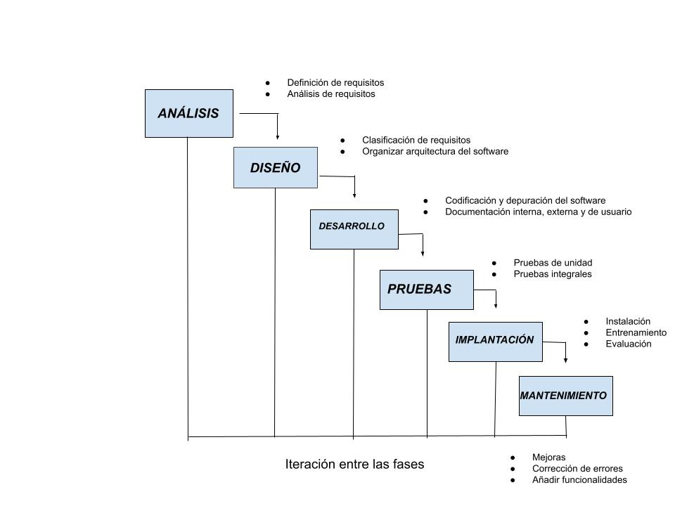

Actiividades tema 1
EJERCICIOS ENTORNOS DE DESARROLLO:
1. La diferencia que existe entre los lenguajes declarativos y imperativos es, que los lenguajes declarativos son lógicos mientras que los imperatvos son estructurados. Otra diferencia es que los lenguajes declarativos son interpretados y los imperativos son compilados y por último los lemguajes declarativos son algebraicos y los imperativos son multiparadigma.
2. Compilar es un proceso en el que se llevan acabo dos fases llamadas:
análisis léxico y análisis sintáctico, através de estas fases se crean un código que si es correcto nos dará como solución el proceso de compilar. Interpretar es un proceso capaz de analizar y ejecutar otros programas escritos en lenguajes de alto nivel.
3. Las ventajas de los lenguajes compilados son: Que este tiene una ejecución muy eficiente, solo se necesita una traducción …
4. Las ventajas de los lenguajes interpretados son : Su principal ventaja es que su código fuente se interpreta directamente, que no depende de la maquina ni del sistema operativo para analizarlo......
5. Dos lenguajes interpretados son: PHP, JAVASCRIPT.
Dos lenguajes compilados son: C, C++
6.
7. ALTO NIVEL:
BAJO NIVEL:
NIVEL MEDIO::
modelo en cascada con retroalimentación
